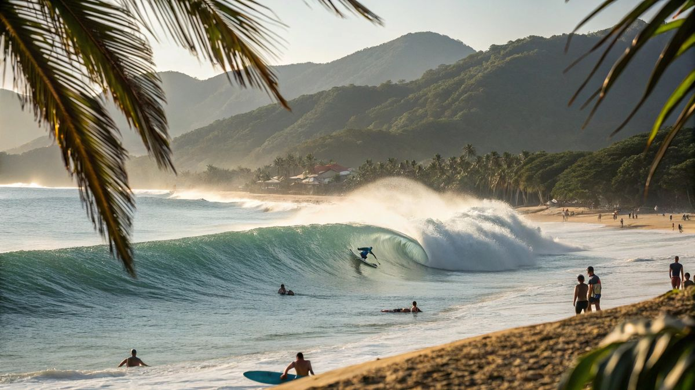

Legendary Surf
Main Point
The crown jewel of Arugam Bay, famous for its long, peeling right-hand point break that attracts surfers from across the globe.
The crown jewel of Arugam Bay, famous for its long, peeling right-hand point break that attracts surfers from across the globe.
Main Point is the most famous break in Arugam Bay, known for its consistency and quality. It is a world-class point break that provides rides as long as 400-600 meters on the best days. The swell wraps around the point, creating a peeling right that is a dream for advanced and professional surfers.
The vibe at Main Point is electric, with a community of surfers sharing waves and stories on the golden shoreline. Whether you're in the water or watching from the beach cafes, it is the soul of Arugam Bay's surfing culture.
Back to Arugam Bay Hub